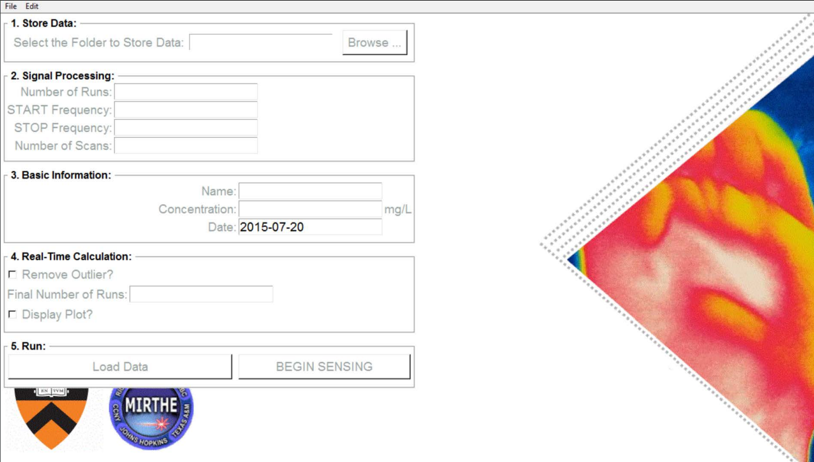
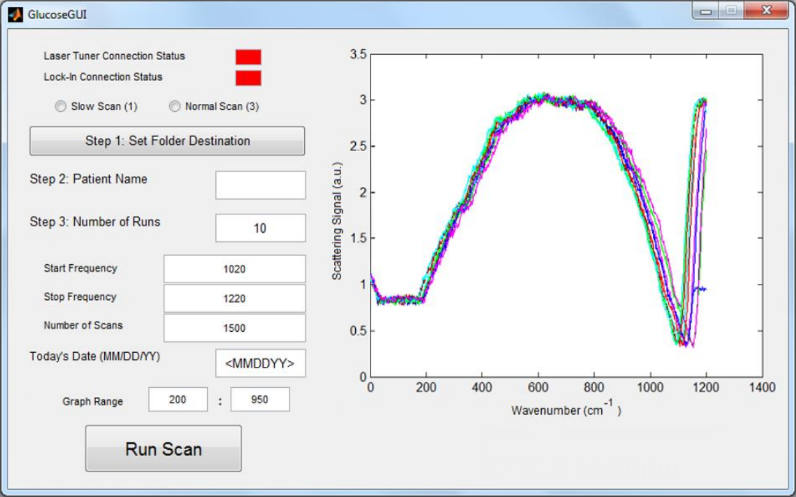
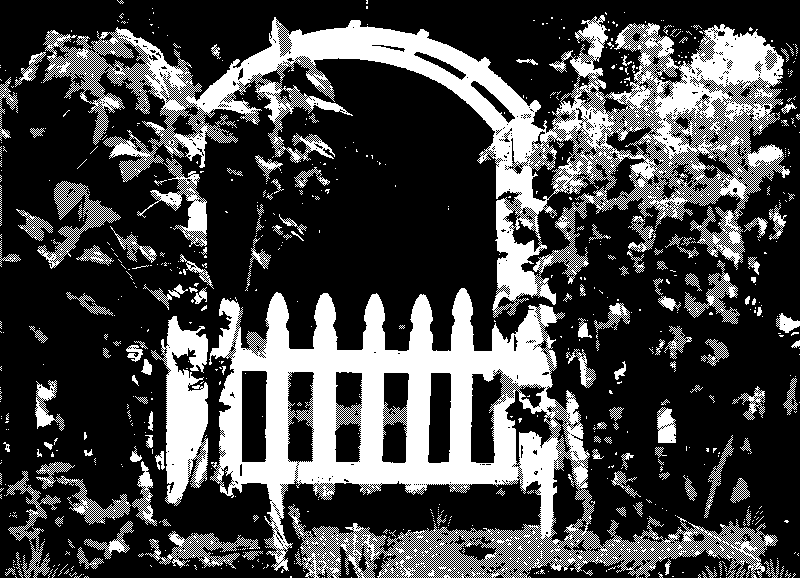
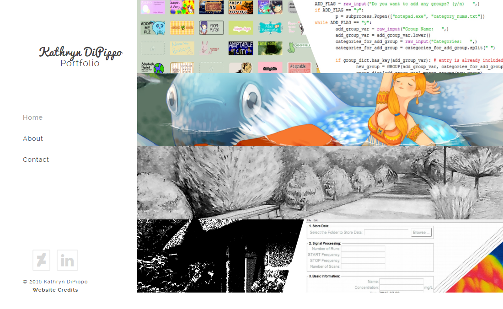

Select one of the headers below to jump to that section.
Layout Customization Pages for Virtual Tour Project (C#, ASP .Net)

Summer of 2016, one of my projects within
Tallan was to assist in implementing a layout customizations feature for their Virtual Tour Project. Even though most of the work towards this project was in regards to the backend and setting up the databases for all of the layout features, I'm particularly proud of how well these pages integrated into the project.
Back to Top
Glucose Sensing Project - Python User Interface (Python)


Summer of 2015, I redesigned and presented a Python GUI to be used at clinical trials in diabetic facilities for
MIRTHE. The project was headed by a new graduate student - Alexandra Werth - who had requested for the majority of the matlab code written prior to be refactored and updated into python with the matlib library. I also presented an abstract and poster entitled “Python and GUI Implementation for Internal Optimization and Increased Usability of in vivo Glucose Sensing System”. I designed two versions for the software: one to be taken into clinical trials (pictured left) and one for interal testing for the lab with more specific parameters (pictured right). The interface was designed to work on a Microsoft Surface and to be favorably designed for a touch screen. The poster and materials I presented
can be found here alongside my name. The code I wrote as part of this internship can also be found
at this respective code repository.
Back to Top
Glucose Sensing Project - MatLab User Interface (MatLab)

Summer of 2014, I designed and implemented a Graphical User Interface (GUI) and calculated statistical analyses using MatLab. Under the direction of Sabbir Liakat, a graduate student at Princeton University, I designed the MatLab UI to interact with his code to read data results from the scattering signals of a laser. I also presented an abstract and poster entitled “Internal Mobilization of in vivo Glucose Sensing System” at MIRTHE Summer Workshop Conference. The poster and materials I presented
can be found here alongside my name.
Back to Top
Through the Garden Gate (HTML)

Spring of 2016, I designed and implemented a choose-your-own adventure style project using html based on a short story by Neil Gaiman called "Instructions". The art itself is based on the works of
Uno Moralez, and the text and UI design is based on the UI of the game
Undertale by Toby Fox.
Back to Top
Kathryn DiPippo Portfolio Website (JavaScript, HTML, and CSS)

Summer and Fall of 2016, I wanted to improve upon my former website portfolio by implementing and coding my own starting with a template. Forming this website was a good starting point for understanding how to put together a functioning website using HTML, JS, and CSS. More information on this website and credits
can be found here, with
its respective code repository found here.
Back to Top